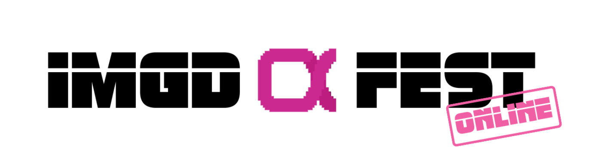

Alphafest

Despite all difficulties, we have recently been able to showcase our game in Alphafest. This year it had be carried out online, but this limitation didn’t stop many IMGD students and professors to meet and try out new games in development. This has allowed us to get feedback from a broader variety of players, which will help us polish our game during the final weeks of this semester.
Because each playtest was carried out individually and we only had a few hours, we did not recieve enough new playtesting form submissions to state anything statistically significant based on the Likert-scale responses alone. Therefore, the data we gathered is largely qualitative and based on the conversations with the playtesters.
One of the main changes we made before Alphafest was redesigning the "Support Level" from the ground up. In the past, we tweaked the original level in order to address some of the playability issues, but even with these continuous incremental changes the responses to the gameplay was still one of frustration and confusion. Because of this, we decided to build an entirely new puzzle for the character switching mechanic, partially inspired by the gameplay elements in the previous level, namely using colored pressure plates and boxes to activate colored elevators. In the previous version of the Support Level, what buttons triggered what actions was somewhat arbitrary; the semiotics related to gameplay mechanics was inconsistent. Therefore, puzzle solving was relegated to pressing buttons until enough things changed to make progress in the puzzle. By reusing gameplay mechanics from the previous level, and eliminating the finicky physics-based puzzles, we hoped to create a more satisfying lateral thinking challenge.
However, this level was in a relatively unpolished state, so we initially decided to let playtesters test the earlier version of the level. When it became clear that playtesters were spending a very long time battling with the inconsistent physics puzzle elements, we decided to swap out the build half-way through Alphafest in order to get some feedback on the new level. This helped us find some bugs (and one exploit that involved using a moveable box as an unintended platform, as one playtester cleverly found.)
Beyond the reaction to the mechanics in the old and revamped Support Level, we also gathered people's thoughts on the overall presentation. Players liked the glitch-art aesthetic, comparing the look and feel to a nightmarish dream. The voice acting and cinematic elements were also received well. All of this feedback will help us in the final stretch of time we have to polish the final product.